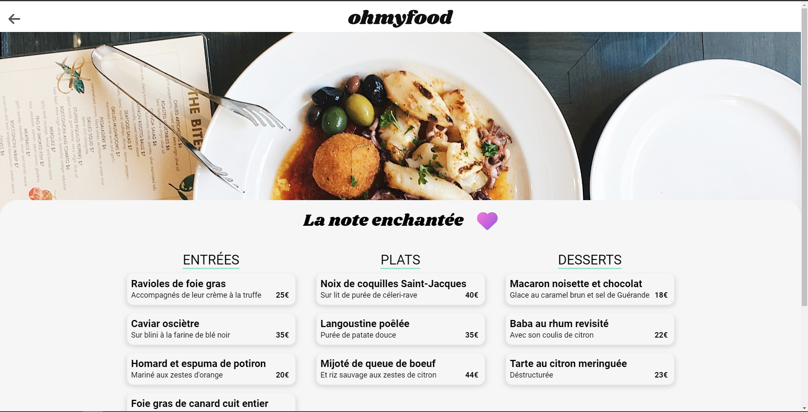
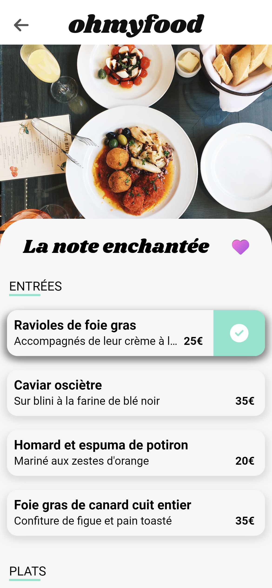

Jeune diplômé de la formation développeur WEB
dispensée par OpenClassrooms.
Passionné d'informatique et de nouvelles
technologies, autodidacte, curieux et
débrouillard.
Compétent du frontend au backend, en passant par
le prototypage ou encore la gestion de bases de
données.
Cette formation m'a permis de découvrir la
conception de sites et applications WEB. De
l'intégration de maquettes, à la réalisation
d'une application complète de A à Z, en passant
par l'apprentissage de la SEO ou encore la
découverte des animations CSS, j'ai parcouru bon
nombre de technologies et méthodes de travail
qui m'ont forgé et me permettent aujourd'hui de
proposer mes compétences variées à toute
entreprise cherchant un développeur talentueux
et complet.
Je propose également mes services à tout
particulier ou petite entreprise qui souhaite
créer sa propre image via un site WEB, qu'il
soit basique, type site vitrine et présentation,
plus évolué du genre blog, ou bien un site
e-commerce ou une application plus complète.
Pour cela, n'hésitez pas à me contacter via les
différents liens présents dans la section
contact.
Benoit TORTEVOIS
Développeur WEB
Freelance / Open To Work
Les bases du développement WEB: HTML et CSS, associés au Javascript. Ce sont d'ailleurs ces 3 technologies qui vous permettent de consulter ce site.
Pour le développement d'API ou d'applications
complètes, je sais m'appuyer sur ces valeurs
sûres:
Le framework REACT pour un
développement du frontend complet, puissant et
rapide.
L'association NODE.js +
Express pour une gestion du
backend simple et fiable.
L'utilisation de bases de données relationnelles
(MySQL) ou bien orientées
documents (mongoDB).
J'ai également appris à utiliser de
nombreuses autres technologies ou techniques
de travail.
Je pense notamment au gestionnaire de
paquets NPM, à l'appui des
tests réalisés avec
Postman pour vérifier le
fonctionnement de son
API par exemple, ou encore
les bonnes pratiques en terme de
responsive design, le
respect des critères d'accessibilité du
W3C ou la mise en oeuvre
d'une politique
SEO efficace.
Projets professionnels
BOOKI - Site de réservation de vacances
Transformer une maquette en site WEB avec HTML et CSS
Le premier projet de ma formation m'a
amené à apprendre le HTML et le CSS, en
découpant une maquette (desktop et
mobile) afin de l'intégrer sous forme de
site WEB.
L'occasion d'apprendre les bases du
frontend, notamment le balisage HTML et
sa sémantique, l'organisation de
contenu, ou encore la découverte du
potentiel de CSS, avec les effets et
l'utilisation de Flexbox notamment.
OHMYFOOD - Application de réservation de menus
Dynamiser un site WEB avec les animations CSS
Ce deuxième projet adoptait une approche "mobile-first". J'ai découvert les animations et transitions CSS et la création d'un site multi-pages.
 LA PANTHERE - Agence de WEB design
Optimiser un site WEB existant
Pour ce troisième projet, la tâche était
d'optimiser le site d'une agence WEB,
qui était mal référencé au niveau des
moteurs de recherche, et avait également
des soucis d'accessibilité.
J'ai découvert l'approche SEO et les
critères d'accessibilité du W3C, afin
d'améliorer le score global du site sur
ces deux points.
KANAP - Site de vente de canapés
Construire un site e-commerce en Javascript
Ce quatrième projet a été l'occasion de
découvrir le langage Javascript, via
l'intégration dynamique des éléments de
l'API déjà présente dans les différentes
pages WEB du site.
Une page d'accueil regroupant l'ensemble
des produits, une page produit
spécifique, un panier et une page de
confirmation: tout ceci a du être géré
de façon dynamique, grâce à Javascript
et l'API.
PIIQUANTE - Application d'évaluations de sauces piquantes
Construire une API sécurisée pour une application d'avis gastronomiques
Pour ce cinquième projet, on passe de
l'autre côté, afin de développer une API
pour une application qui permet aux
utilisateurs de proposer des sauces
piquantes, et de les évaluer.
Une API basée sur l'utilisation de
Node.js + Express, ainsi que d'une base
de données orientée documents (type
noSQL) via MongoDB.
GROUPOMANIA - Réseau social d'entreprise
Créer un réseau social interne d'entreprise
Ce sixième et dernier projet de la
formation m'a permis de construire une
application complète de A à Z. Je me
suis appuyé sur le framework React.js
pour la partie frontend, et sur Node.js
+ Express pour développer l'API. Le tout
épaulé par une base de données SQL, via
MySQL.
Un projet long, intense, mais
enrichissant et m'ayant permis de
recourir à toutes les compétences que
j'ai pu acquérir tout au long de ma
formation.
 Télécharger en .pdf
Télécharger en .pdf
Un courrier papier, c'est bien aussi.
Un café, c'est encore mieux!